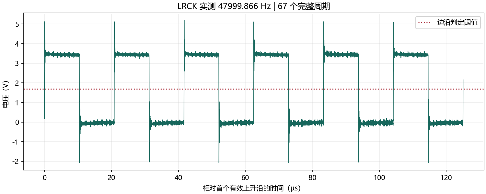

实测：47999.866 Hz。不是示波器采集采样率。
接线与固件版本为人工确认；周期离散包含仪器误差，不证明无抖动，不代表比赛验收通过。

| LRCK 实测频率（Hz） | 47999.86581531439 |
|---|---|
| 平均周期（µs） | 20.83339157337705 |
| 最短周期（µs） | 20.82007291799245 |
| 最长周期（µs） | 20.848222915177434 |
| 观测周期标准差（ns，含仪器误差） | 9.32901404727981 |
| 完整周期数 | 67 |
| 每周期采样点数 | 20833.12500000001 |
| 低电平估计（V） | -0.08 |
| 高电平估计（V） | 3.48 |
| 边沿判定阈值（V） | 1.7 |
| 采样间隔（ns） | 0.9999999 |
| 相对标称 48 kHz 的偏差（ppm） | -2.795514283504552 |
| 计算方法 | 筛选有效上升沿，线性插值定位阈值，使用全部完整周期 |
| 记录类型 | LRCK 采样率分析 |
| 原始数据 SHA256 | 52308751ec792057bc4f95a90f5e5ad97877c2539fd3c46e58248cd123a6b303 |
| 示波器身份 | RIGOL TECHNOLOGIES,DS2202A,DS2D192700914,00.03.05.SP1 |
| 示波器采集采样率（Hz） | 1000000100.00001 |
| 人工记录的固件版本 | C:/Users/lenovo/Desktop/FPGA/FPGA_Instrument_20261031/project/integrated_instrument_64/impl/pnr/integrated_instrument_64.fs |
| 人工指定烧录文件 SHA256 | 2a1c5ea9a07e9421049f5e1623558a684046df6744faac9d5258cddcdec18ef8 |
| 接线已经人工确认 | 是 |
| 采集元数据 SHA256 | 7cf97ee8532f06383ff3405d4fd5e8ad9adf9a4c7c3f269a99f5d6406ad64ecb |